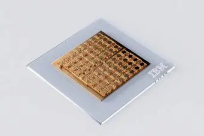

Oblasti využití
Kvantové počítače mají potenciál zásadně změnit mnoho oborů. Díky své výpočetní síle mohou řešit problémy, které jsou pro klasické počítače příliš složité nebo časově náročné.
Zdroj obrázku: Wikimedia Commons
Konkrétní příklady
🔹 Kryptografie – prolomení i tvorba nových šifrovacích metod
🔹 Farmacie – simulace molekul pro vývoj nových léků
🔹 Logistika – optimalizace tras, skladů a dodavatelských řetězců
🔹 Umělá inteligence – zrychlení učení a analýzy dat
Budoucnost kvantových technologií
Vývoj kvantových počítačů je stále v rané fázi, ale pokroky jsou rychlé. Firmy jako IBM, Google a D-Wave investují miliardy do výzkumu. V budoucnu se očekává, že kvantové technologie budou běžnou součástí vědy, průmyslu i každodenního života.